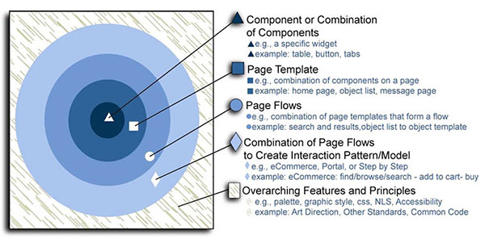
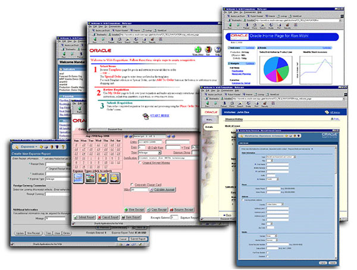
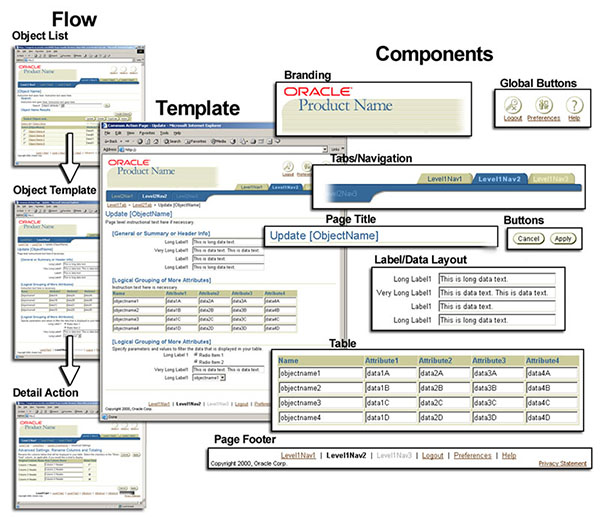

【论文笔记】靶心：一个Web应用程序用户界面设计指南结构
论文题目：The Bull’s-Eye: A Framework for Web Application User Interface Design Guidelines
作者：Betsy Beier 、Misha W. Vaughan
来源：CHI Ft. Lauderdale, Florida, USA • April 5-10, 2003
【综述】本文提出了多层次框架的web应用用户界面设计指南。靶心框架在用户界面设计指南的具体和泛泛两个极端之间寻找到一个平衡点。靶心框架是五层同心圆结构。从内到外依次是组件层、网页模板、网页流程、界面模型与模式、总体特点和原则。用户界面设计师、产品经理、Ui开发人员和产品开发人员都参与制定指南的过程之中，同时可用性测试覆盖原则测试到具体的产品测试多个层面。指南旨在为那些探索设计系列web应用或web站点的人提供示例。
【问题挑战】
1.甲骨文公司的UI指南聚焦于Java，而不是HTML。它聚焦于插件水平而没有提供用例、多项选择、高层次组件组合及上下文例子来说明使用方法；
2.新的指南需要适用于新技术——web应用；
3.需要为覆盖各领域的100+基于Web的产品设计并提供用户配置文件；
4.我们缺乏任何形式设计或实施这一系列准则的支持。
【解决方案】
“靶心”的设计旨在解决上述四个挑战。“靶心”模型代表同心圆准则，从内到外依次是组件、页面模板、页面流程、交互模型与模式以及总体特点和准则。（如下图）
1.评估调研现有准则指南
作者通过评估研究现有的GUI指南及Web风格指南发现现有的资源或过于宽泛无法适用于具体案例，或过于具体无法适用于我们面临的各种各样的产品。
2.探索现有Web应用及Web站点
我们发现一系列的Web应用的新的Ui设计普遍原则，如：使用一个描绘页面方向，采用一个基于浏览器的分层页面组织，使用自由的布局及使用Web导航结构如标签导航和侧导航。
3.减少可互动的用户界面
JS只用在非常有限的环境，Java小程序根本不适用以达到跨浏览器的兼容、国际化和可访问性。
4.多样化的用户基础及用户配置设置
指南将不仅仅包括个性化的Ui组件，同时包括页面布局及页面流程。“靶心”解决了基于广泛的产品范围创造一个一致通用的用户体验问题，但是它没有在这些广泛的产品内解决用户多样性的问题。因此为了满足用户多样性，需要给每层指南提供多样性的选择。
5.缺少企业高层支持
为了使得Ui指南及标准化的工作取得成功，我们在以下三方面展开：
1）.教育：给产品团队提供咨询帮助、课堂讲座；给开发团队提供基于Web的自学课程。
2）.协调：收集产品及用户配置；开发可复用的代码；指南的可用性测试；及针对个别产品的评价；并且这是一个以周为单位的持续的过程。
3）.沟通：和可用性测试部门、界面设计部门、产品团队沟通交流。并且通过会议或e-mail通知UI设计师、可用性测试工程师、产品经理、开发人员、主管及副总裁指南更新。
【内容&指南结构】
1.组件
准则的第一级总结了在各种应用的所需内容及功能中，UI组件的各种交互效果及选项,如图3；
2.页面模板
页面模板是一个页面上各种组件的组合。每个页面模板中有多个组件选择及布局选项，在满足一致性的整体目标下稍有不同。
3.页面流程
页面流程是在一个任务流程中一系列页面模板的组合。
4.交互模型和形式
交互模型和形式是支持特定类型应用的流程组。这些UI模型是由通用的一系列网页流程和网页模板及定制的内容的组合。
5.整体特点和准则
准则提供了启发和用于保持用户体验一致性的整个“靶心”同心圆模型的标准。这些特点和准则包括对象导向vs行为导向、美术指导标准、UI中的语言及可用性标准。
6.支持其他标准
准则必须遵守公司内的其他标准。
7.通用编程标准
为了达到靶心创造一个通用的跨欧朋应用程序的目标，我们需要所有的应用程序一个统一的支持UI标准的通用代码库。代码库同样需要遵循靶心模型，自内层向外层开发。
8.指南结构
指南每个层级都用一致的格式传达，各部分分别是：指南总体说明；指南属性；交互和使用场景；视觉元素规范；可用性数据；关于指南的开放式和封闭式的问题。
9.方法可信度
通过与UI设计师、可用性工程师、产品经理、开发经理各部门人合作来确保指南内容和结构的可信度。同时，通过自上而下及自下而上的可用性测试来验证指南的可信度。
【经验教训】
在制定标准过程中的一大挑战是解决保持不同应用间的一致性及兼容不同应用的特殊需求的问题。作者通过要求团队提供说明他们的需求是特殊需求的文档解决这个问题。另一个挑战是维护这些指南文档。第三个挑战是引入了外部组的人员，通过招募各个领域的盟友来提供专业知识咨询解答。
【结论&创新点】
“靶心”模型为从一般原则到具体组件如何组织形成指南提供了一个框架。通过这个框架补充了其他指南和标准的空缺，并且为如何为一个广泛领域的用户及应用程序设计提供了范式。
To Say